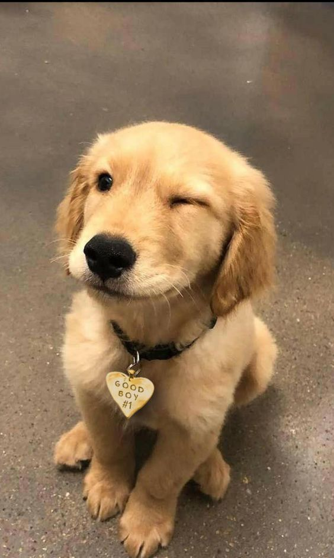
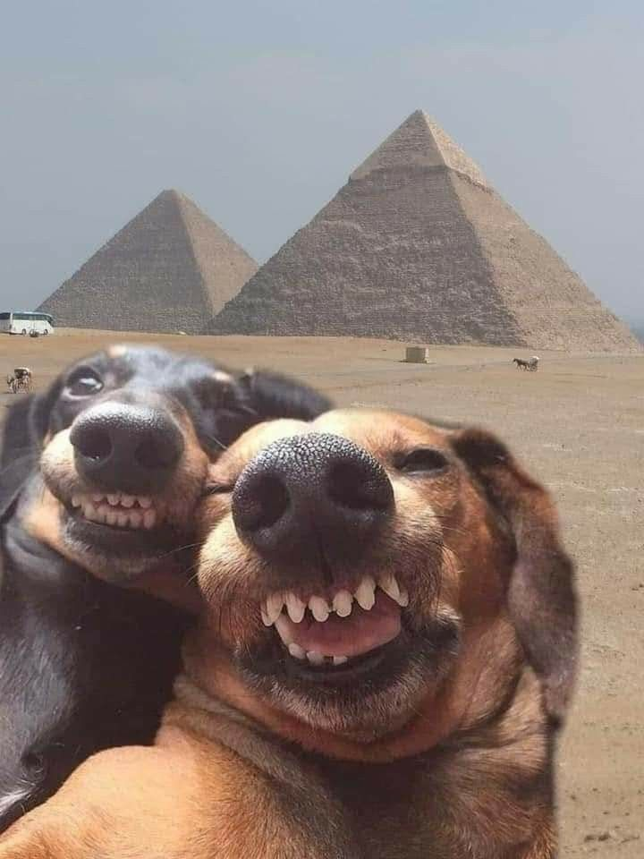

Escribo estas palabras con el corazón rebosante de emoción y gratitud por este reencuentro que ha iluminado nuestras vidas de nuevo. Han pasado muchos años desde que nuestras vidas tomaron caminos separados, pero el destino, en su infinita sabiduría, nos ha dado la oportunidad de volver a encontrarnos.
Nuestro amor de juventud era intenso, pero también era vulnerable. Éramos jóvenes, llenos de sueños e ideales, pero a veces nuestros propios miedos y inseguridades se interponían en nuestro camino. Nos lastimábamos sin quererlo, sin saber cómo sanar las heridas que íbamos dejando.
Hoy, al mirarte a los ojos de nuevo, puedo ver la madurez y la sabiduría que los años han traído a nuestras vidas. Hemos aprendido de nuestras experiencias pasadas, hemos crecido como personas y, sobre todo, hemos aprendido a valorar la importancia de cuidar y proteger el amor que sentimos el uno por el otro.
Este reencuentro es un regalo del destino, una oportunidad para escribir un nuevo capítulo en nuestra historia de amor. Estoy emocionada por la posibilidad de volver a construir juntas una relación basada en el respeto, la confianza y el cariño mutuo. Sé que el camino no será fácil, pero estoy dispuesta a recorrerlo a tu lado, enfrentando juntas los desafíos que se presenten en nuestro camino. Gracias por darme esta oportunidad, por creer en nosotros y por estar dispuesta a darle una nueva oportunidad a nuestro amor. Estoy segura de que juntas podemos superar cualquier obstáculo y construir una relación sólida y duradera. Con todo mi amor y gratitud,No podía creer que existiera una persona tan hermosa en la tierra y claro, como todo, llegaste y lo desmentiste.